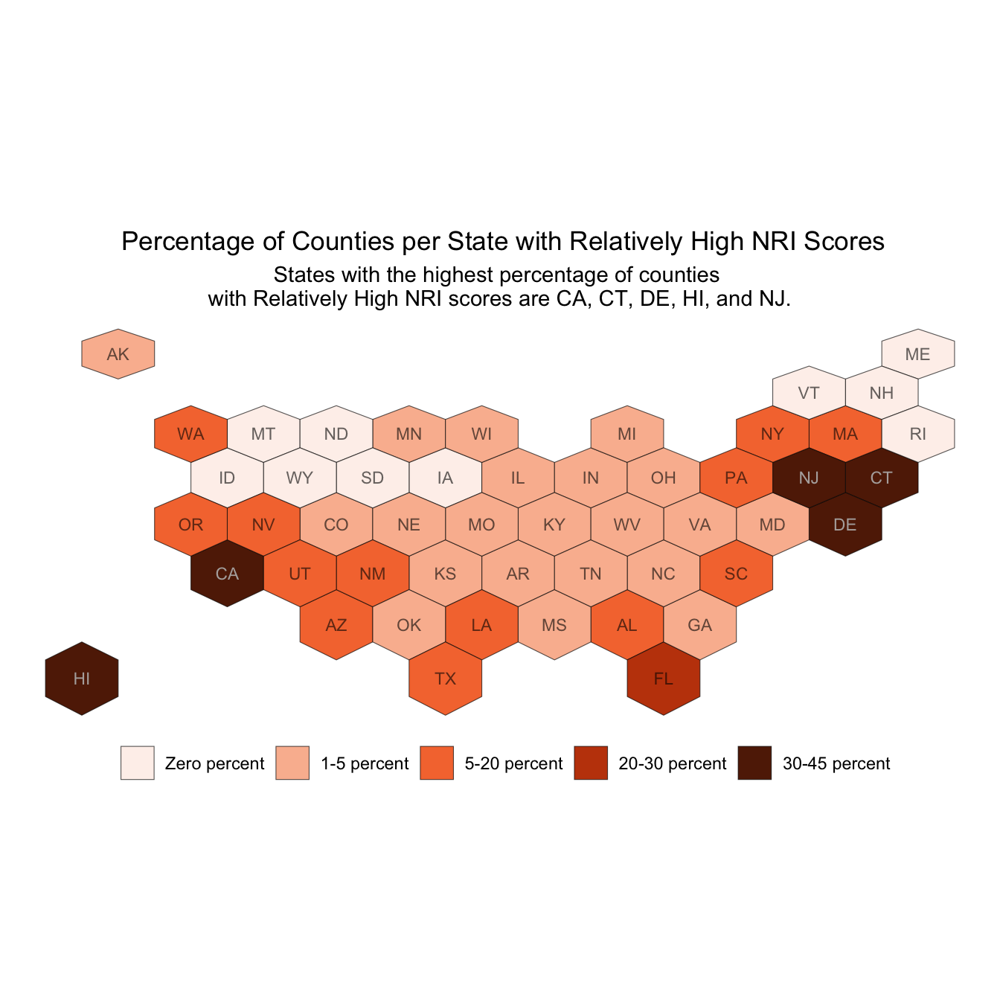

# load necessary libraries
library(tidyverse)
library(janitor)
library(sf)EDS 240 - Homework 2
This quarto document explores FEMA National Risk Index scores throughout California in comparison to the NRI scores in other states.
How do FEMA National Risk Index scores for counties in California compare to those in other states?
# read in data
nri <- read_csv(here::here("data", "National_Risk_Index_Counties.csv"))
# clean names
nri <- clean_names(nri)Check the number of states. This analysis will only include the 50 US states.
# number of states included
length(unique(nri$state_name))[1] 56Filter to only the 50 states.
# only select for 50 states
nri <- nri |>
filter(nri$state_name %in% state.name)The Hexbin map will ensure the information on the East Coast is visible in comparison to a bubble map. The hexagons were downloaded from https://team.carto.com/u/andrew/tables/andrew.us_states_hexgrid/public/map.
# read in hexbins file
hexagons <- read_sf("data/us_states_hexgrid.geojson")How do FEMA National Risk Index scores for counties in California compare to those in other states? My interpretation of this question is to calculate the percentage of counties in each state that have an NRI score in the “Relatively High” category.
# calculate sum of counties satisfying the boolean
nri_high_risk <- nri |>
group_by(state_name_abbreviation) |>
summarize(high_risk_count = sum(national_risk_index_rating_composite == "Relatively High",
na.rm = TRUE)) |>
rename(state_abbr = state_name_abbreviation) |>
ungroup()# calculate the number of counties in each state
nri_total <- nri |>
group_by(state_name_abbreviation) |>
summarize(county_num = n()) |>
rename(state_abbr = state_name_abbreviation) |>
ungroup()
# join the two data frames
nri_high_risk_percent <- full_join(nri_high_risk, nri_total, by = "state_abbr")
# calculate percentage with relatively high scores
nri_high_risk_percent <- nri_high_risk_percent |>
mutate(perc_high_risk_count = (high_risk_count/county_num) * 100)The hexagon column names need to be cleaned in order to join the hexagon and NRI scores.
# rename and clean columns
hexagons <- hexagons |>
rename(state_abbr = iso3166_2) |>
mutate(google_name = gsub(" \\(United States\\)", "", google_name))Join the two dataframes for plotting.
hex_nri <- left_join(nri_high_risk_percent, hexagons, by = join_by(state_abbr))Calculate the minimum and maximum percentage of counties with “Relatively High” NRI scores in all states.
min(hex_nri$perc_high_risk_count)[1] 0max(hex_nri$perc_high_risk_count)[1] 42.85714Create bins to include the minimum and maximum percentage of counties with “Relatively High” NRI scores. This was also done with trial and error.
hex_nri$bin <- cut(hex_nri$perc_high_risk_count, # select the column to bin based on
breaks = c(-0.1, 0, 5, 20, 30, 45), # create bins
labels = c("Zero percent",
"1-5 percent",
"5-20 percent",
"20-30 percent",
"30-45 percent"), # name bins appropriately for graphing
include.lowest = TRUE
)Subset for only states with 30 to 45 percent of counties with “Relatively High” NRI scores.
hex_nri_cc <- hex_nri |>
filter(state_abbr == "CA"|
state_abbr == "CT" |
state_abbr == "NJ" |
state_abbr == "DE" |
state_abbr == "HI")Plot the hexbins with the percentage of counties in each state with an NRI score in the “Relatively High” category.
ggplot() +
geom_sf(data = hex_nri,
aes(geometry = geometry,
fill = bin)) +
geom_sf_text(data = hex_nri,
aes(geometry = geometry,
label = state_abbr), # add state abbreviations to the hexagons
color = "black",
size = 3,
alpha = 0.6) +
geom_sf_text(data = hex_nri_cc,
aes(geometry = geometry,
label = state_abbr),
color = "white", # add white labels for states within the 30-45% range
size = 3,
alpha = 0.6) +
theme_void() + # removes grid lines and unnecessary graph ink
scale_fill_manual(name = "", # remove the legend title
values = c("#FEF1EC",
"#FABB9E",
"#F5773D",
"#C2440A",
"#612205")) +
labs(title = " Percentage of Counties per State with Relatively High NRI Scores",
subtitle = "States with the highest percentage of counties \nwith Relatively High NRI scores are CA, CT, DE, HI, and NJ.") +
theme(plot.title = element_text(hjust = 0.5),
plot.subtitle = element_text(hjust = 0.5),
legend.position = "bottom")
- What are your variables of interest and what kinds of data (e.g. numeric, categorical, ordered, etc.) are they (a bullet point list is fine)?
- Variable of interest: Percentage of counties per state that have “Relatively High” NRI scores.
- How did you decide which type of graphic form was best suited for answering the question? What alternative graphic forms could you have used instead? Why did you settle on this particular graphic form?
- Since this data is highly geographic some form of spatial data felt best to visualize the states with the highest count of counties with NRI scores in the “Relatively High” category. Originally, I made a bubble map but the east coast has too many and too close of states to make it effective. This hexbins map assigns one value to each hexagon and maintains the size regardless of the true state’s size acting as a proxy for actually mapping the data.
- I could have also made a bar plot for the states with the ten highest number of counties with NRI scores in the “Relatively High” category. I again chose hexbins because I wanted to include a geospatial aspect. I also like that the hexbin provides a way to represent the data of all 50 states without being too overwhelming.
- Summarize your main finding in no more than two sentences.
- California, Connecticut, Delaware, Hawaii, and New Jersey have the highest percentage of counties with “Relatively High” NRI scores.
- What modifications did you make to this visualization to make it more easily readable?
- I moved the legend to the bottom of the graph so that the map can span the length of the plot. This reduces the amount of eye movement necessary to understand the plot.
- I customized the colors to make them monochromatic displaying the values from low to high. Since I’m only plotting one variable different shades of the same color were appropriate to represent different values.
- I changed the labels in the legend and removed the legend title since it was redundant with the title of the graph.
- I added labels to the hexagons so that it is easy to interpret and understand.
- Is there anything you wanted to implement, but didn’t know how? If so, please describe.
- I wanted to move the labels to the top of the graph but the spacing was crammed and I was unsure how to adjust the overall spacing.